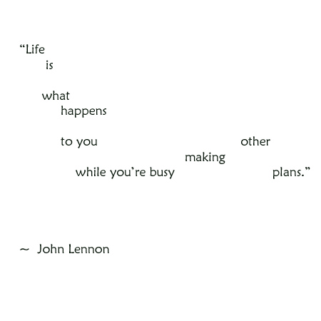

Okay, this one's just for art!


"Lay, lady, lay,
Lay across my big brass bed,">
~ Bob Dylan
"Humans are too social
(would rather have negative than none?)
and ... TOO VISUAL."
~ AnderzBare Johannesburgski
"Loneliness is the human experience."

"There'll come a time when all your hopes are fading,
when things that seem so very plain become an awful pain,
searching for the truth among the lying
and answered when you relearn the art of dying,"
~ George Harrison, "Art of Dying"


What do you want on your tombstone?
. . . "Dreamer" . . .
What do you want on your Tombstone®?
sausage and black olives

Warhol at Walker